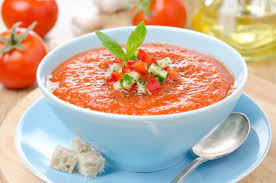

GAZPACHO

gazpachito del bueno
PASO A PASO AQUÍ
INGREDIENTS
- Paso 1. Echa todos los ingredientes en una batidora y bate hasta obtener la consistencia deseada.
- Paso 2. Deja enfriar en la nevera durante 1-2 horas o hasta que esté bien frío.
- Paso 3.Si tienes prisa, puedes añadir cubitos de hielo, aunque lo ideal es dejarlo enfriar en la nevera.